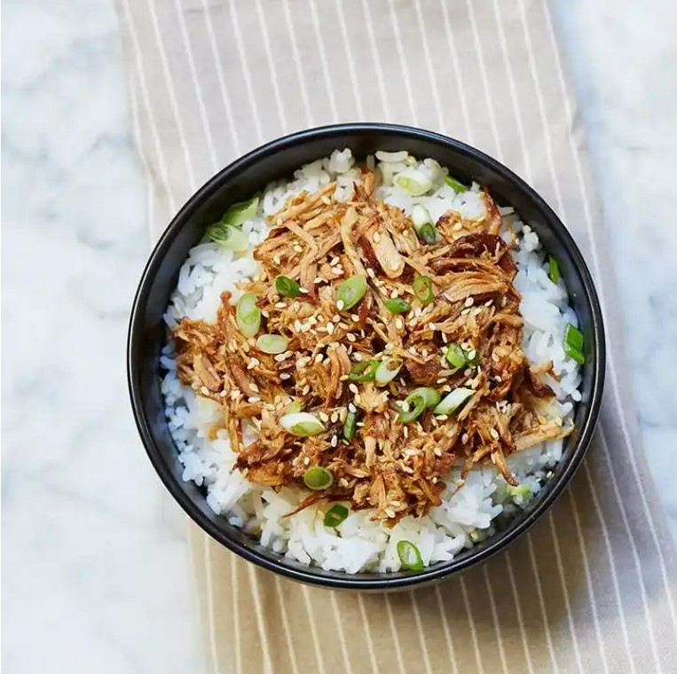

Ravioli Lasagna

While the original dish can be a little tricky (all that layering, not to mention making a béchamel sauce from scratch), this version is
significantly easier to master.
Ingredients
- 2 tablespoons olive oil
- 1 sweet onion, diced
- 2 garlic cloves, minced
- 1 pound ground beef
- 1 teaspoon salt
- ¾ teaspoon freshly ground black pepper
- 1 teaspoon dried oregano
- 1½ cups marinara sauce
- 2 pounds ravioli, thawed if frozen (we used mushroom, but any kind of filling will do)
- 1½ cups ricotta cheese
- 2 cups shredded mozzarella cheese
- 3 tablespoons chopped fresh basil, as needed for garnish
Steps
- Preheat the oven to 375°F. Lightly grease a 9-by-13-inch casserole dish with nonstick spray.
- In a large skillet, heat the olive oil over medium heat. Add the onion and sauté until translucent, 4 to 5 minutes. Add the
garlic and cook until fragrant, 1 minute more.
-
Add the ground beef and sauté until fully cooked, 6 to 8 minutes. Season with the salt, pepper and oregano.
-
Stir in the marinara sauce and bring to a simmer over medium-low heat. Simmer until the sauce thickens slightly and has good flavor,
20 minutes.
-
While the sauce cooks, bring a large pot of salted water to a boil. When it comes to a rolling boil, add the ravioli and cook according
to the instructions on the package. Drain well.
-
To build the lasagna, place a layer of ravioli in the base of the pan. Ladle a quarter of the sauce over the ravioli, then top with ½
cup ricotta cheese, spread into a layer. Sprinkle with a ¼ cup mozzarella.
-
To build the lasagna, place a layer of ravioli in the base of the pan. Ladle a quarter of the sauce over the ravioli, then top with ½
cup ricotta cheese, spread into a layer. Sprinkle with a ¼ cup mozzarella.
-
Bake the lasagna until the sauce is bubbly and the cheese is melty, 25 to 30 minutes. Let cool at least 10 minutes before slicing and
serving. Garnish with basil and serve warm.